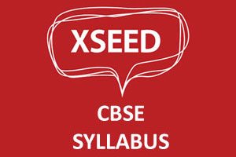
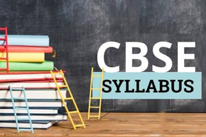
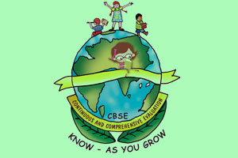
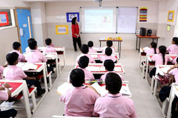
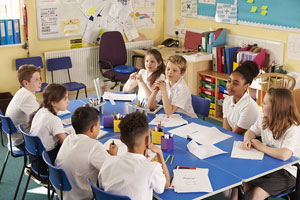

01 · Learning by understanding
Structured syllabus
- Activity (Concept) Based, Project Oriented and How to apply concept in real time

XSEED CBSE SYLLABUS – Hands on experience.
Assessments and Exams pattern we followed as per CBSE
Children should be evaluating throughout the year through CCE
DIGITAL CLASSES – Tata Classedge – Visual representation of the concept.
Digital Language Lab from Orell – Emphasis on Strong Communication Skills & Leadership qualities through the concepts like Phonetics, Spelling Strategies, Build a Sentence, Group discussions, Debates….etc.